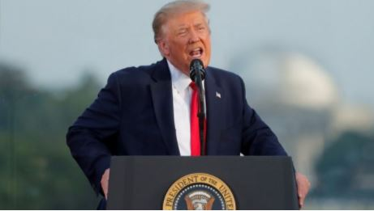

Heróis de guerra ou 'otários'? A saia-justa de Trump com os militares
Segundo a revista The Atlantic, presidente, que concorre à reeleição em novembro, chamou feridos ou mortos na guerra de 'perdedores' e 'otários'; Trump nega ter usado as palavras.